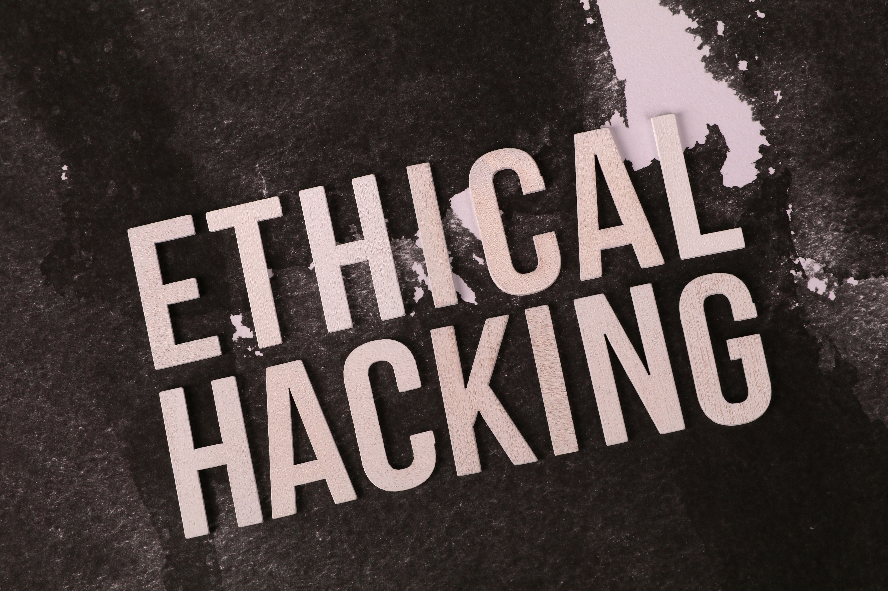

Reconnaissance & OSINT
Organize public information, identify targets and prioritize security investigations.
Explore Reconnaissance →From Recon to Threat Detection
Explore Cybersecurity TopicsOrganize public information, identify targets and prioritize security investigations.
Explore Reconnaissance →
Analyze code, detect security weaknesses and understand potential risks.
Discover Vulnerability Analysis →Plan authorized security tests, analyze results and document findings.
Explore Penetration Testing →Investigate suspicious code, understand its behavior and extract indicators.
Learn About Malware Analysis →LLMs help security analysts summarize alerts, connect related events, investigate suspicious activity and prepare incident reports.
Discover How LLMs Help Security AnalystsLLMs may generate inaccurate answers, expose sensitive information or suggest unsafe actions. Always verify their recommendations, protect confidential data and keep human expertise in control.
Explore AI Security Best Practices